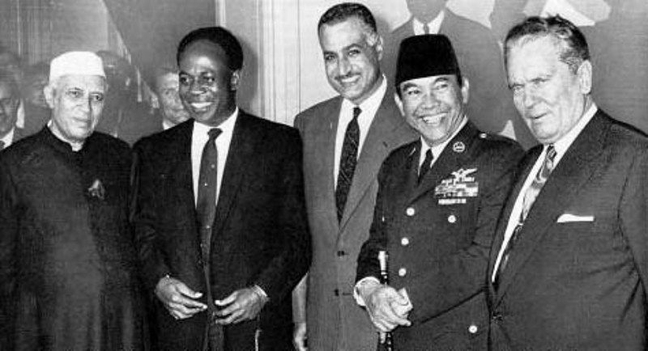
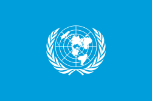

2.2.1 Peran Indonesia dalam Konferensi Asia Afrika

Pada 1955, pemerintah RI menyelenggarakan KAA (Konferensi Asia Afrika) di Bandung. Di KAA didiskusikan sebagai berikut:
- Adanya pertentangan blok Barat kapitalis dan blok Timur komunis yang mengancam perdamaian dunia.
- Banyak negara Asia-Afrika menjadi korban praktik imperialisme/kolonialisme negara Barat.
- Adanya politik diskriminasi rasial di beberapa negara Afrika.
- Bangsa Asia Afrika perlu menjalin kerja sama menghadapi masalah pembangunan, ekonomi, sosial, pendidikan, dan kebudayaan.
KAA mencetuskan sepuluh prinsip (Dasasila Bandung) yang disebutkan:
- Menghormati hak-hak dasar manusia dan tujuan-tujuan serta asas-asas yang termuat dalam Piagam PBB.
- Menghormati kedaulatan dan integritas teritorial semua bangsa.
- Mengakui persamaan semua ras dan persamaan semua bangsa baik besar maupun kecil.
- Tidak melakukan intervensi atau campur tangan dalam soal negeri negara lain.
- Menghormati hak setiap bangsa untuk mempertahankan diri secara sendirian atau secara kolektif, yang sesuai dengan Piagam PBB.
- Tidak menggunakan peraturan pertahanan kolektif untuk bertindak bagi kepentingan khusus salah satu negara besar.
- Tidak melakukan tekanan terhadap negara lain.
- Tidak melakukan tindakan-tindakan atau ancaman agresi ataupun penggunaan kekerasan terhadap integritas teritorial atau kemerdekaan politik suatu negara.
- Menyelesaikan segala perselisihan internasional dengan jalan damai, seperti perundingan, persetujuan, arbitrase atau penyelesaian hukum, atau cara damai lain menurut pilihan pihak yang bersangkutan sesuai dengan Piagam PBB.
- Memajukan kepentingan dan kerjasama bersama.
- Menghormati hukum dan kewajiban-kewajiban internasional.
KAA juga menghasilkan sebagai berikut:
- Bandung Message
- Deklarasi penguatan NAASP
- Deklarasi kemerdekaan Palestina
2.2.2 Peran Indonesia dalam Gerakan Non-Blok

Gerakan Non-Blok (GNB) atau Nonaligned Movement (NAM) adalah negara yang tidak memasuki Blok Barat atau Timur. Tokoh pelopor GNB disebut The Initiative of Five yang terdiri dari:
- Presiden Soekarno mewakili Indonesia
- Presiden Yosep Broz Tito mewakili Yugoslavia
- Presiden Gamal Absul Nasser mewakili Mesir
- Perdana Menteri Jawaharlal Nehru mewakili India
- Perdana Menteri Kwame Nkrumah mewakili Ghana
- Salah satu pelopor GNB
- Mewakili Indonesia untuk menyampaikan keputusan KTT GNB I kepada John F. Kennedy
- Indonesia menjadi penyelenggara dan ketua KTT x GNB 1-6 September 1992 di Jakarta
- Presiden ke-2 Indonesia, Soeharto membuka kembali Dialog Utara Selatan dalam KTT G-7 di Tokyo, 1993
- Indonesia selalu mempertahankan kemurnian GNB, memajukan ekonomi, serta membantu dalam penghapusan penjajahan
- Indonesia meredakan ketegangan kawasan bekas Yugoslavia
- Memacu kegiatan ekspor impor antar anggota GNB
2.2.3 Peran Indonesia dalam PBB

PBB didirikan pada 24 Oktober 1945 di San Fransisco, AS. Peran Indonesia di PBB diantaranya:
- Pada 1974 Menteri Luar Negeri Adam Malik menjabat sebagai ketua Majelis Umum PBB.
- Pada tahun 1971 Prof Fr. Soedjatmiko menjabat rektor Universitas PBB
- Indonesia di DK PBB untuk pertama kali terpilih menjadi anggota tidak tetap DK PBB
- Pada 1984, Indonesia membantu Ethiopia yang dilanda kelaparan dan mengirim bantuan melalui FAO
- Berusaha menyelesaikan antarfaksi di Kamboja
- 1995 Indoesia menampung pengungsi Vietnam dengan menyediakan Pulau Galang
- Indonesia menjadi mediator perdamaian pemerintah Filipina dengan MNLF
- Menlu Mochtar Kusuma Atmadja menjadi anggota ILC PBB pada 1992-2001
- Indonesia menjadi anggota dewan HAM pada 2006 dan 2007-2010
- Mengirimkan Kontingen Garuda ke berbagai negara yang membutuhkannya.